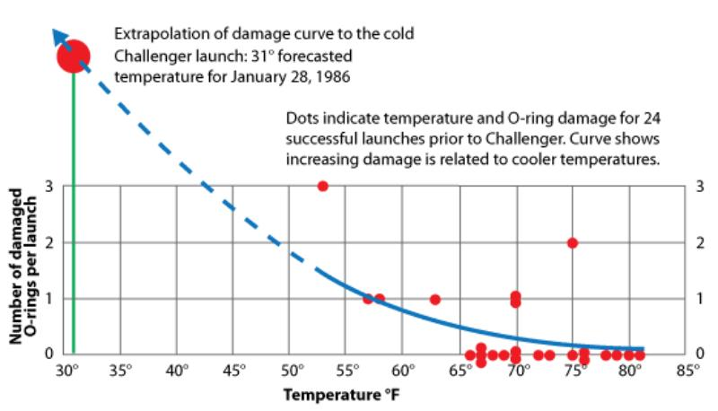
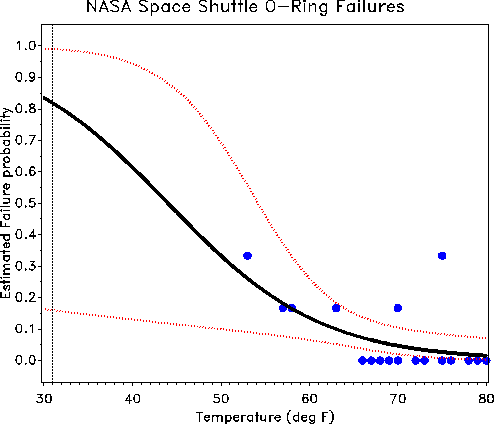

class: center, middle # TM529 ## RISK ASSESSMENT ### Probability and statistics #### 2 --- class: split-60 ## Learning outcomes .column[ .left[ Demonstrating the importance of statistics Explaining the relevance to the field Analyzing and interpreting data Deconstructing myths about statistics Deriving basic metrics Chapter 7 in the book ] ] .column[ .right[ Has anyone taken a statistics course? Math classes tend not to focus on engineering so it is annoying Python very useful for statistical analysis ] ] --- class: split-60 ## Learning nodes .column[ .left[ **Probability and statistics definitions** **Probability distributions** **Likelihood** **Statistics critique** **Classic case studies** Cholera WWII Challenger ] ] .column[ .right[ **Misconceptions** ] ] --- class: center,middle  --- class: center, middle # What is probability? --- ## Probability theory was invented by Pascal and de Fermat for gambling Anyone know how to count cards? Can up your odds in blackjack to almost over 50:50 What is the objective of blackjack? Cards 2-6 have a value of +1 Cards 7-9 have a value of 0 Cards 10-A have a value of -1 How are these 'probabilities'? Keep a running total = running count Divide by the number of decks = true count When would you want to bet high? In a standard 6 deck blackjack game each true count will move the house edge half a percent toward the player You still need to know how to play though --- ## Clearly, probability theory is essential for risk assessment Perception of probability is not necessarily what the real probability is This was the point of Monty Hall and the modified Russian roulette Risk perception is hugely important Dice is usually a common starting example And we know the expected value of dice --- ## Anyone play craps? Explained in Section 7.1 in the book [Wizard of odds](http://wizardofodds.com/play/craps/v2/) 'off': bet pass, win if 7 or 11 Probability? 'point': win if point is thrown before craps (2,3,12) then the 'don't' is the opposite there's a whole bunch of other bets: box cars, snake eyes, etc. what is the probability of these? So the reason craps is popular is because there are a lot of favorable probabilities --- ## Event needs to be _clearly characterized_ before deriving probabilities Wrong probability if describing the wrong event Wrong assumptions What is the probability of... 1. ...russian roulette spinning the chamber after each turn? 2. ...winning the men's college basketball tournament? 3. ...winning the superbowl? 4. ...NBA title? 5. I could only think of sports things...? What is an independent event? Dependent event? --- ## Ground rules for probabilities AND = multiply probabilities $P(A \cap B) = P(A) \cdot P(B)$ OR = add probabilities $P(A \cup B) = P(A) + P(B)$ CONDITIONAL = B given A P(theory|data) ~ P(data|theory) P(theory) [Bayes Theorem](https://courses.lumenlearning.com/uidaho-riskassessment/chapter/bayes-theorem/) $P(B|A) = \frac{P(A \cap B)}{P(A)}$ $P(B|A) = \frac{P(B) P(A|B)}{P(A)}$ --- ## More terms for probabilities experiment = process by which an outcome is observed and we get data what experiments are we conducting in our research? sample space = set of all possible outcomes event = subset of sample space joint probability = occurrences of two random variables --- ## There is precise terminology to describe statistical problems population (universe) = collection of things under consideration sample = portion of the population selected for analysis Less time consuming and costly than a census Less cumbersome and more practical to administer parameter = summary measure computed to describe a characteristic of the population statistic = summary measure computed to describe a characteristic of the sample --- ## Use statistics to infer something about the population based on the sample 1. Collect data 2. Present data 3. Characterize data (fit to a known distribution to obtain moments) Categorical data = qualitative Numerical data = discrete or continuous Central tendencies of data = mean, median, mode Measure of spread = variance, standard deviation Higher level moments = skewness, kurtosis These are readily derived from known distributions --- ## So the goal is to find distributions for collected data in order to predict universe Also can use Monte Carlo methods Which we have done to simulate injection casting failure using Weibull Sensitivity analysis = rate of change of output with input, local about nominal value, global over entire parameter space --- ## Why do we need data? To provide input to survey To provide input to study To measure performance of service or production process To evaluate conformance to standards To assist in formulating alternative courses of action To satisfy curiosity What else? --- class: center,middle # Probability distributions --- ## We derive probability distributions from sample spaces Why? How can a distribution be derived? Probability is starting with an animal, and figuring out what footprints it will make Statistics is seeing a footprint, and guessing the animal Discrete or continuous Probability density function $P(a \leq X \leq b) \equiv \int_a^b p(x)dx$ Cumulative distribution or 'unreliability' $P(X \leq x) \equiv \int_{-\infty}^x p(\xi)d\xi$ Used to determine failure rates for safety analysis [1st and 2nd moments](https://courses.lumenlearning.com/uidaho-riskassessment/chapter/statistical-moments/) are used to obtain expected value and variance --- class: center,middle $\rho (x) \equiv \lambda e^{-\lambda x}, \; x > 0$ $E[X] \equiv \int_{0}^{\infty} x \rho (x) dx = \frac{1}{\lambda}$ $Var[X] \equiv \int_{0}^{\infty} x^2 \rho (x) dx = \frac{1}{\lambda^2}$ --- ## [Normal distribution](https://courses.lumenlearning.com/uidaho-riskassessment/chapter/common-statistical-distributions/)  --- class: center,middle $p(x) = \frac{1}{\sigma\sqrt{2\pi}} \; e^{-\frac{1}{2}(\frac{x-\mu}{\sigma})^2}$ --- class: center,middle  --- class: center,middle # Likelihood --- ## [Likelihood](https://courses.lumenlearning.com/uidaho-riskassessment/chapter/likelihood/) is a tool for summarizing the data’s evidence about unknown parameters Normal distribution depends on two parameters $f(x;\mu,\sigma) = \frac{1}{\sigma\sqrt{2\pi}} e^{-\frac{(x-\mu)^2}{2\sigma^2}}$ f is a PDF when the parameters are constant and we vary in x f is a likelihood when x is constant and the parameters vary A common application of the likelihood function is in estimation Estimate parameters from some given data x to understand how the function behaves if it has 'fat tails' or really skewed --- ## There may not be a lot of data where the true mean, etc., could be directly obtained Example of statistical inference So, if a coin is 'fair' then we know p = 0.5 and can use the binomial distribution for the PDF $f(x) = \frac{n!}{x!(n-x)!}p^x(1-p)^{(n-x)}$ For 10 flips of the fair coin $f(x;p) = \binom{10}{x}0.5^x(1-0.5)^{(10-x)}$ --- ## What if you don't know the coin is fair? You see 7 heads on 10 flips Now it's a likelihood function $L(p;x) = \binom{10}{7}p^7(1-p)^3$ Typically to find p, find the maximum or log maximum --- class:center,middle  --- class: center,middle # Statistics critique --- ## Statistics get a bad rap There are three kinds of lies: lies, damned lies, and statistics. -Benjamin Disraeli I gather, young man, that you wish to be a Member of Parliament. The first lesson that you must learn is, when I call for statistics about the rate of infant mortality, what I want is proof that fewer babies died when I was Prime Minister than when anyone else was! -Winston Churchill --- class: center,middle  --- ## Statistics are tools, not ends It is very easy for research psychologists, particularly young psychologists, to be overconcerned with statistical methods... However, **careful observation** is the main business of empirical science, and statistical methods are useful only so long as they help, not hinder, the **systematic exploration of data** and the accumulation and coordination of results. William Hays (1963) --- ## Statistical inference: The “grand thing of reasoning backwards” In solving a problem of this sort, the grand thing is to be able to reason backward. That is a very useful accomplishment, and a very easy one, but people do not practise it much...Most people, if you describe a train of events to them, will tell you what the result would be. They can put those events together in their minds, and argue from them that something will come to pass. There are few people, however, who, if you told them a result, would be able to evolve from their own inner consciousness what the steps were which led up to that result. This power is what I mean when I talk of reasoning backwards... Sherlock Holmes - A Study in Scarlet --- class: center,middle # Let's look at some [seminal cases](https://courses.lumenlearning.com/uidaho-riskassessment/chapter/probability-and-statistics/) --- class: center,middle # Cholera ## In 1854, there was a cholera outbreak near Broad Street in London Over 500 people died Seminal epidemiological study by Dr. John Snow They did not know cholera was water borne **Snow knew nothing at the time!** Snow mapped the 13 public wells and known cholera deaths (Soho) Not great water treatment practices back then Spatial clustering of cases around one particular water pump SW corner of Broad Street and Cambridge Street Others died who had water delivered from that pump Or went to school there Shut it down and new cases stopped --- class: center,middle  --- class:center, middle  --- class: center,middle # WWII --- ## Statistics is even used in war Too many Allied planes were getting shot down over Germany During WWII, statistician Abraham Wald was asked to catalog the location of bullet holes on returning Allied aircraft and determine the best places to reinforce the planes with armor To reduce losses Take observations of planes that did return Draw map of where each aircraft was hit (generally) --- class: center,middle  --- class: center,middle  --- ## Wald’s supervisors concluded that nose, wings, fuselage were covered in damage and needed more armor Wald said, no Why? He recognized survivorship bias in the sample Allies were only sampling planes that completed their missions and returned home A form of sampling bias --- ## Don't miss the forest for the trees when analyzing tons of data Garbage in = garbage out Good data in != good conclusions out without good analysis (engineering judgement) And that applies to risk assessment how? When we were critisizing utilitarianism --- ## The Challenger explosion was the first space shuttle catastrophe 28 January 1986 Forecast calls for abnormally low temperature (30F) Engineers recommend against launch due to concern about O-ring failure NASA flight control overrules O-rings had failed due to cold temperatures on the morning of the launch Challenger explodes shortly after launch (73 seconds) First time this happened Christa McAuliffe, teacher from New Hampshire, selected to teach lessons from space This was a big deal leading up to the launch --- ## Launch was already delayed for six days due to weather, technical problems Reagan appointed a special commission to determine what went wrong with Challenger and to develop future corrective measures Neil Armstrong and Chuck Yeager on the commission O-ring seal on solid rocket booster became brittle Flames broke out and damaged the external fuel tank NASA managers were aware of these design problems but also failed to act (Lack of ethical context imo) --- ## Launches resumed in 1988 after redesigns But there still have been failures Would there ever be 100% safety? Are there more contemporary analogues? --- ## [Lessons learned from the Space Shuttle Challenger](https://courses.lumenlearning.com/uidaho-riskassessment/chapter/contemporary-cases-in-risk-assessment/) Argue that the very concept of risk management must be called into question Using a failure modes effects analysis without any quantitative risk measures Bad analysis to determine catastrophic mission failure Astronauts were completely unaware of the specific dangers that the O-rings pose Did not give an **informed consent** to launch O-ring design ranked fourth out of four submitted engineering designs Everything in the area of risk management is a matter of ethics --- class: center,middle ### Was it necessary to take cavalier chances with risky technology in order to make progress in the arena of space exploration? ---  Initial analysis did not include mission with 0 damage Trend was not observed 3 incidents of thermal distress occurred out of twenty flights at 66F or greater ---  4 **flights** at 63F or below experienced thermal distress Probability of O ring distress is increased to almost a certainty if the temperature of the joint is less than 65 --- class: center,middle # Misconceptions --- ## These case studies point to common misconceptions about the use of statistics **Statistics is mostly mathematics, formulas, proofs** Statistics is the science of data, their production, how to make the right inferences **Statistics is obvious** Statistical inference can be highly counterintuitive and often involves “backwards reasoning” **Statistical analyses can easily be done by computers** Nothing relieves the investigator of the direct responsibility of understanding data and how best to analyze and interpret --- ## I don’t plan on doing research myself, I just want to learn interesting things about ____________ Engaging in science at any level (including as a consumer) requires critical analysis Knowledge of statistical methods is needed to protect us against false claims, junk science Examples? ---